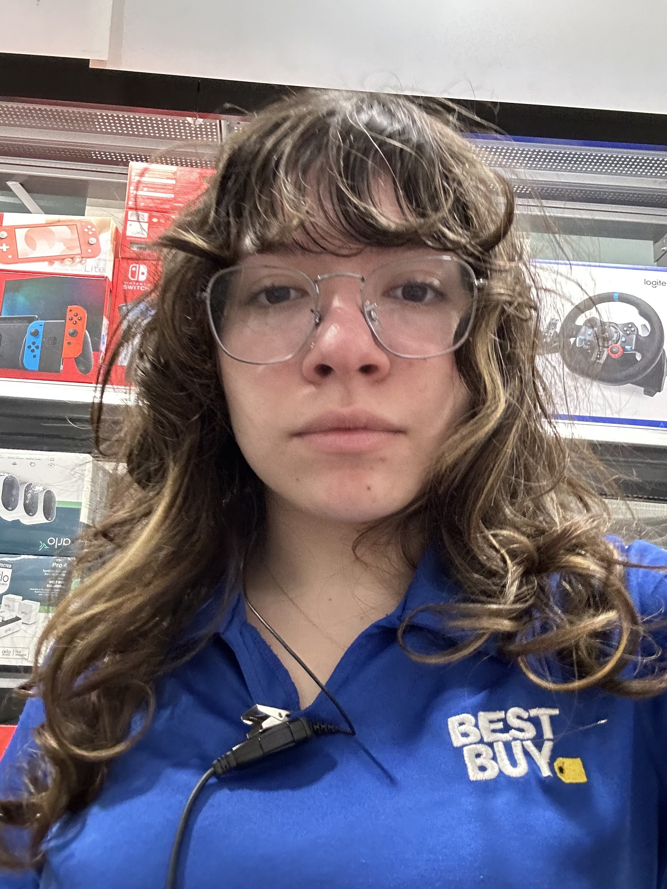
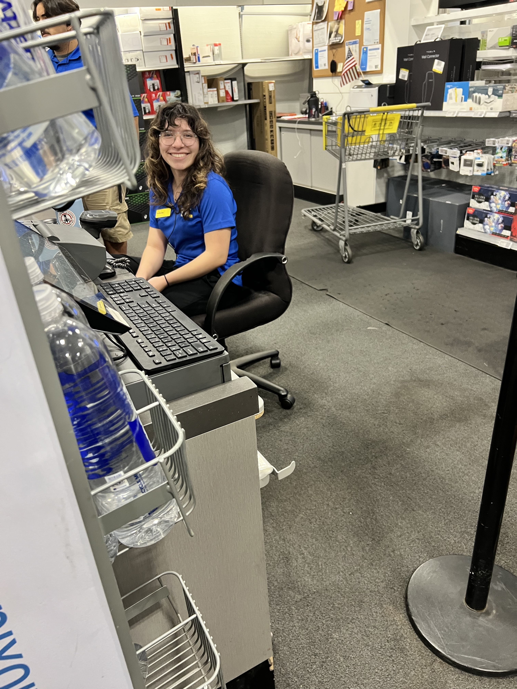
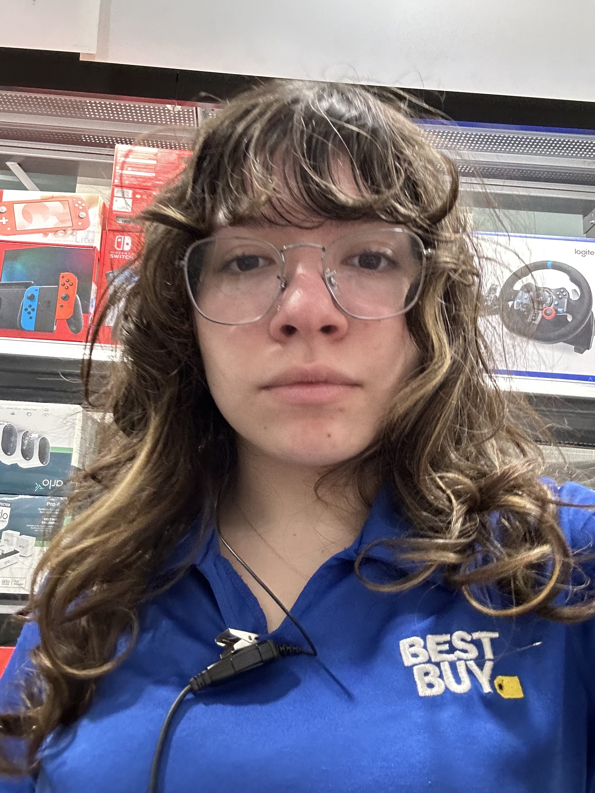
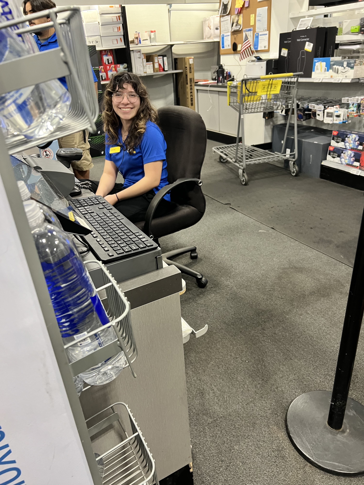

Portfolio



 
I am a full time college student interested in working in a fast-paced environment with individuals of the same mindset. Any job that I am given the opportunity to work I try my hardest to gain the maximum amount of knowledge I can from it whether that takes the form of a technical skill or simply bettering my personal enrichment skills. My employers have told me I have a natural talent for providing the best customer service for customers due to my charisma and personability. I am a multifaceted worker with a diverse array of skills that allow me to be malleable and flexible in any environment.
Although my time in the workforce has barely started, I feel as though I have learned a lot about myself in a professional setting. My main area of expertise in the workforce is manning cash registers and providing customer service support. My most recent work experience has been working at Best Buy under the title sales associate. I have worked there for about a year and am still currently employed by said company. This job has allowed me to learn about my work style and has helped my hone both my communication and problem solving skills. As a sales associate, I am tasked with ringing up customers on our POS system - a system that I was able to learn the ins and outs of quite quickly- in which I supplemented customer's purchases with my own knowledge and expertise on the item they were purchasing. Though the majority of the job involved purchases and returns, there were instances when I would have to deal with customer service issues as well. In these instances I prided myself and my self-starting abilities in being able to assess the situation and solve the problem rather easy on my own a majority of the time. Times when the situation required knowledge I had not learned yet, I was not afraid to call a supervisor who could help the customer more efficiently than I could have. When these situations arose, I took them as a learning opportunity and observed the way in which my supervisor would solve the problem. Although I may have not immediately knew how to alleviate the situation in the moment, I was not afraid to take the time and supplement my previous knowledge on the job in order to assure I can give future customers a far easier and seamless experience.
Working at Best Buy has allowed me to break the ice and acclimate myself into a professional setting and I am forever grateful for the opportunities this first job has given me. Unfortunately, I feel as though my priorities and goals in the workforce have outgrown the ones that Best Buy has set in stone for me. This job has allowed me to realize my love for customer service and helping customers with their problems, which has inspired me to pivot towards a job that is more customer service oriented. With this in mind I am seeking a job that can fulfill my desire for conflict resolution and challenge me with situations that I have never previously been in, as this will mentally stimuate me and allow me to further grow and flourish in whichever title I am given in the near future.
• Take orders and check inventory to ensure products are in stock
• Process and fill customer's food orders, and prepare dishes
• Answer customers' questions about products and advise customers on product selection
• Welcome and engage with customers in a warm, friendly manner
• Serve as a brand ambassador by bringing together passion for people and technology to serve customers
• Recommend products and solutions that meet customers’ needs
• Complete cashier duties for purchases, returns and exchanges
• Apply the appropriate knowledge and expertise through ongoing learning and development
• Ensure department is clean and well stocked
• Provided an environment in which able to learn how to work and cooperate with a team in order to reach a certain goal
• Allowed for demonstration of discipline and tact when setting mind upon something
• Developed 'growth' mindset
• Taught young children dances for summer workshops and dance concerts